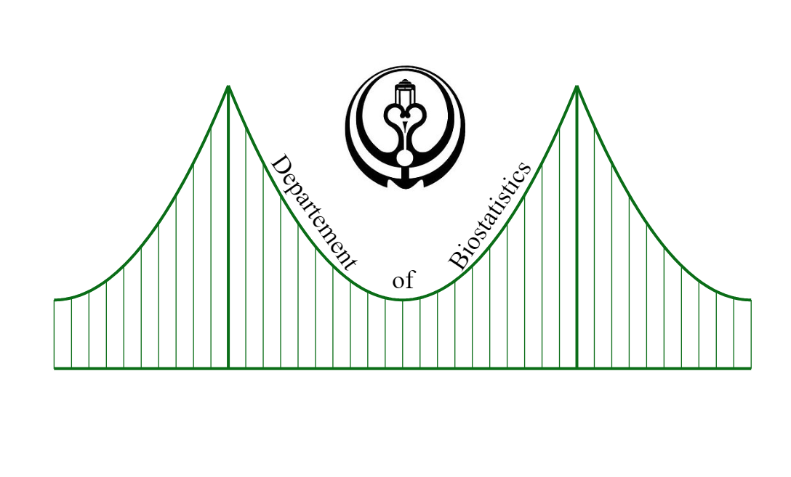

rm(list = ls())
gc(verbose = F, reset = TRUE)
R Programming Workshop
Habib Ezzatabadi
To Understand Computaions in R, two slogans are helpful:
- Everything that exists is an object.
- Everything that happens is a function call.
John Chambers
What characteristics should a programming language have in order to be a programming language?
a programming language typically includes several key features to be effective and versatile. Here are some of them:
Variables and Data Types: Variables are used to store data, and data types define the kind of data that can be stored.
Control Structures: These include conditional statements (like
if,else) and loops (likefor,while) that control the flow of the program.Functions or Procedures: These are reusable blocks of code that perform a specific task. They can take inputs and return outputs.
Input and Output Operations: A programming language should be able to interact with the user or system, taking input and providing output.
Error Handling Mechanisms: This allows the program to respond to unexpected events or conditions.
Libraries or Packages: These are collections of pre-written code that programmers can use to save time and effort.
Object-Oriented Features: Many modern languages support object-oriented programming, which includes concepts like classes, objects, inheritance, and polymorphism.
Concurrency Control: For applications that require multitasking, languages provide features to manage concurrent execution of tasks.
Remember, not all programming languages have all these features, and some languages may have additional features not listed here. The choice of language often depends on the specific needs of the project or task at hand.
Why do we use loop in programming?
Loops are fundamental to programming because they allow developers to efficiently repeat tasks. Here are a few reasons why we use loops in programming:
Code Reusability: Instead of writing the same code multiple times, a loop can execute a block of code as many times as needed. This makes the code more concise and easier to maintain.
Efficiency: Loops can significantly reduce the time and effort required to develop and debug code. They allow programmers to handle large amounts of data effectively.
Control over Program Flow: Loops provide control over the flow of the program. They allow the program to move forward only if certain conditions are met, which is crucial in decision-making processes.
Data Processing: Loops are especially useful in scenarios where data needs to be processed or manipulated. For example, iterating over arrays or lists, performing operations on each element of a database, etc.
Before we continue the discussion together, we need to talk about vector programming;
what mean Vector programming
Vector programming, also known as array programming, refers to a style of computer programming where operations are applied to whole arrays instead of individual elements. In this style of programming, a single operation can cause data to be manipulated in a collection of numbers (usually arrays or matrices), which can significantly improve performance for mathematical and scientific computations.
For example, if you have two arrays of numbers and you want to add them together, in a traditional programming language like C or Java, you would typically use a loop to iterate over the arrays and add each pair of numbers one at a time. But in a vector programming language like MATLAB or NumPy in Python, you can add the two arrays directly with a single command, and the programming language takes care of performing the addition for each pair of elements.
This style of programming is particularly useful in fields such as data analysis, physics simulations, and machine learning where operations on large datasets are common.
In order to better understand the different of vector programming and traditional programming, pay attention to the following examples;
Generate data with n = 109
## generate data -----
set.seed(321)
n <- 1e+9
mymat <- matrix(rnorm(n, 2, 1), 1e+5, 1e+4)
saveRDS(mymat, file = "Data_for_test")Traditional Programming
Use Nested Loops (while)
rm(list = ls())
gc(verbose = F, reset = TRUE)
mem_init <- pryr :: mem_used()[[1]]
mymat <- readRDS("Data_for_test")Use Nested Loops (while)
rm(list = ls())
gc(verbose = F, reset = TRUE)
mem_init_w <- pryr :: mem_used()[[1]]
mymat <- readRDS("Data_for_test")## Use Traditional Programmin ------------------------------
mean_temp1_w <- NULL
start_time1_w <- Sys.time()
k <- 1
while (k <= 1e+4) {
temp <- 0
m <- 1
while (m <= 1e+5) {
temp <- temp + mymat[m, k]
m <- m + 1
}
mean_temp1_w <- c(mean_temp1_w, temp / 1e+5)
k <- k + 1
}
end_time1_w <- Sys.time()
Time_Traditional_w <- difftime(end_time1_w, start_time1_w, unit = "sec")[[1]]
trad_mem_w <- pryr :: mem_used()[[1]] - mem_init_w
save(mean_temp1_w, Time_Traditional_w, trad_mem_w, file = "Traditional_w.RData")Use Nested Loops (for)
rm(list = ls())
gc(verbose = F, reset = TRUE)
mem_init <- pryr :: mem_used()[[1]]
mymat <- readRDS("Data_for_test")## Use Traditional Programmin ------------------------------
mean_temp1 <- NULL
start_time1 <- Sys.time()
for (i in 1:1e+4) {
temp <- 0
for (j in 1:1e+5) {
temp <- temp + mymat[j, i]
}
mean_temp1 <- c(mean_temp1, temp / 1e+5)
}
end_time1 <- Sys.time()
Time_Traditional <- difftime(end_time1, start_time1, unit = "sec")[[1]]
trad_mem <- pryr :: mem_used()[[1]] - mem_init
save(mean_temp1, Time_Traditional, trad_mem, file = "Traditional_f.RData")Use Nested Loops (repeat)
rm(list = ls())
gc(verbose = F, reset = TRUE)
mem_init_re <- pryr :: mem_used()[[1]]
mymat <- readRDS("Data_for_test")## Use Traditional Programmin ------------------------------
mean_temp1_re <- NULL
start_time1_re <- Sys.time()
k = 1
repeat{
j = 0
s <- 0
repeat{
j <- j + 1
temp = mymat[j, k]
s <- s + temp
if (j == 1e+5) break
}
mean_temp1_re <- c(mean_temp1_re, s / 1e+5)
if (k == 1e+4) break
k <- k + 1
}
end_time1_re <- Sys.time()
Time_Traditional_re <- difftime(end_time1_re, start_time1_re, unit = "sec")[[1]]
trad_mem_re <- pryr :: mem_used()[[1]] - mem_init_re
save(mean_temp1_re, Time_Traditional_re, trad_mem_re, file = "Traditional_re.RData")using include Loop (for)
rm(list = ls())
gc(verbose = F, reset = TRUE)
mem_init <- pryr :: mem_used()[[1]]## use loop --------------------
mymat <- readRDS("Data_for_test")
mean_temp2 <- NULL
start_time2 <- Sys.time()
for(i in 1:1e+4){
temp <- mean(mymat[, i])
mean_temp2 <- c(mean_temp2, temp)
}
end_time2 <- Sys.time()
time_loop <- difftime(end_time2, start_time2, unit = "sec")[[1]]
loop_mem <- pryr :: mem_used()[[1]] - mem_init
save(mean_temp2, time_loop, loop_mem,
file = "loop.Rdata")use apply function
rm(list = ls())
gc(verbose = F, reset = TRUE)
mem_init <- pryr :: mem_used()[[1]]## apply -----------------
mymat <- readRDS("Data_for_test")
mean_temp3 <- NULL
start_time3 <- Sys.time()
mean_temp3 <- apply(mymat, 2, mean)
end_time3 <- Sys.time()
time_apply <- difftime(end_time3, start_time3, unit = "sec")[[1]]
apply_mem <- pryr :: mem_used()[[1]] - mem_init
save(mean_temp3, time_apply, apply_mem, file = "aPPly.RData")Use vapply function
rm(list = ls())
gc(verbose = F, reset = TRUE)
mem_init <- pryr :: mem_used()[[1]]## vapply -------------------------
mymat <- readRDS("Data_for_test")
mean_temp4 <- NULL
start_time4 <- Sys.time()
mean_temp4 <- vapply(mymat|> as.data.frame(), FUN = mean, FUN.VALUE = numeric(1))
end_time4 <- Sys.time()
time_vapply <- difftime(end_time4, start_time4, unit = "sec")[[1]]
vapply_mem <- pryr :: mem_used()[[1]] - mem_init
save(mean_temp4, time_vapply, vapply_mem, file = "Vapply.RData")Use lapply function
rm(list = ls())
gc(verbose = F, reset = TRUE)
mem_init <- pryr :: mem_used()[[1]]## lapply -------------------------
mymat <- readRDS("Data_for_test")
mean_temp5 <- NULL
start_time5 <- Sys.time()
mean_temp5 <- lapply(mymat|> as.data.frame(), FUN = mean) |> unlist()
end_time5 <- Sys.time()
time_lapply <- difftime(end_time5, start_time5, unit = "sec")[[1]]
lapply_mem <- pryr :: mem_used()[[1]] - mem_init
save(mean_temp5, time_lapply, lapply_mem, file = "lapply.RData")Use sapply function
rm(list = ls())
gc(verbose = F, reset = TRUE)
mem_init <- pryr :: mem_used()[[1]]## sapply -------------------------
mymat <- readRDS("Data_for_test")
mean_temp6 <- NULL
start_time6 <- Sys.time()
mean_temp6 <- sapply(mymat|> as.data.frame(), FUN = mean, simplify = TRUE)
end_time6 <- Sys.time()
time_sapply <- difftime(end_time6, start_time6, unit = "sec")[[1]]
sapply_mem <- pryr :: mem_used()[[1]] - mem_init
save(mean_temp6, time_sapply, sapply_mem, file = "sapply.RData")rm(list = ls())
gc(verbose = F, reset = TRUE) used (Mb) gc trigger (Mb) max used (Mb)
Ncells 576638 30.8 1272364 68 576638 30.8
Vcells 1064280 8.2 8388608 64 1064280 8.2generate with n = 106
rm(list = ls())
gc(verbose = F, reset = TRUE)Traditional Programming
## generate data -----
set.seed(321)
n <- 1e+6
mymat_l <- matrix(rnorm(n, 2, 1), 1e+3, 1e+3)
saveRDS(mymat_l, file = "Data_for_test_l")rm(list = ls())
gc(verbose = F, reset = TRUE)
mem_init_l <- pryr :: mem_used()[[1]]
mymat_l <- readRDS("Data_for_test_l")Use Nested Loops (while)
## Use Traditional Programmin ------------------------------
mean_temp1_w_l <- NULL
start_time1_w_l <- Sys.time()
k <- 1
while (k <= 1e+3) {
temp <- 0
m <- 1
while (m <= 1e+3) {
temp <- temp + mymat_l[m, k]
m <- m + 1
}
mean_temp1_w_l <- c(mean_temp1_w_l, temp / 1e+3)
k <- k + 1
}
end_time1_w_l <- Sys.time()
Time_Traditional_w_l <- difftime(end_time1_w_l, start_time1_w_l, unit = "sec")[[1]]
trad_mem_w_l <- pryr :: mem_used()[[1]] - mem_init_l
save(mean_temp1_w_l, Time_Traditional_w_l, trad_mem_w_l, file = "Traditional_w_l.RData")Use Nested Loops (for)
rm(list = ls())
gc(verbose = F, reset = TRUE)
mem_init_l <- pryr :: mem_used()[[1]]
mymat_l <- readRDS("Data_for_test_l")## Use Traditional Programmin ------------------------------
mean_temp1_f_l <- NULL
start_time1_f_l <- Sys.time()
for (i in 1:1e+3) {
temp <- 0
for (j in 1:1e+3) {
temp <- temp + mymat_l[j, i]
}
mean_temp1_f_l <- c(mean_temp1_f_l, temp / 1e+3)
}
end_time1_f_l <- Sys.time()
Time_Traditional_f_l <- difftime(end_time1_f_l, start_time1_f_l, unit = "sec")[[1]]
trad_mem_f_l <- pryr :: mem_used()[[1]] - mem_init_l
save(mean_temp1_f_l, Time_Traditional_f_l, trad_mem_f_l, file = "Traditional_f_l.RData")Use Nested Loops (repeat)
rm(list = ls())
gc(verbose = F, reset = TRUE)
mem_init_l <- pryr :: mem_used()[[1]]
mymat_l <- readRDS("Data_for_test_l")## Use Traditional Programmin ------------------------------
mean_temp1_re_l <- NULL
start_time1_re_l <- Sys.time()
k = 1
repeat{
j = 0
s <- 0
repeat{
j <- j + 1
temp = mymat_l[j, k]
s <- s + temp
if (j == 1e+3) break
}
mean_temp1_re_l <- c(mean_temp1_re_l, s / 1e+3)
if (k == 1e+3) break
k <- k + 1
}
end_time1_re_l <- Sys.time()
Time_Traditional_re_l <- difftime(end_time1_re_l, start_time1_re_l, unit = "sec")[[1]]
trad_mem_re_l <- pryr :: mem_used()[[1]] - mem_init_l
save(mean_temp1_re_l, Time_Traditional_re_l, trad_mem_re_l, file = "Traditional_re_l.RData")including Loops (for)
rm(list = ls())
gc(verbose = F, reset = TRUE)
mem_init_l <- pryr :: mem_used()[[1]]## use loop --------------------
mymat_l <- readRDS("Data_for_test_l")
mean_temp2_l <- NULL
start_time2_l <- Sys.time()
for(i in 1:1e+3){
temp <- mean(mymat_l[, i])
mean_temp2_l <- c(mean_temp2_l, temp)
}
end_time2_l <- Sys.time()
time_loop_l <- difftime(end_time2_l, start_time2_l, unit = "sec")[[1]]
loop_mem_l <- pryr :: mem_used()[[1]] - mem_init_l
save(mean_temp2_l, time_loop_l, loop_mem_l,
file = "loop_l.Rdata")use apply function
rm(list = ls())
gc(verbose = F, reset = TRUE)
mem_init_l <- pryr :: mem_used()[[1]]## apply -----------------
mymat_l <- readRDS("Data_for_test_l")
mean_temp3_l <- NULL
start_time3_l <- Sys.time()
mean_temp3_l <- apply(mymat_l, 2, mean)
end_time3_l <- Sys.time()
time_apply_l <- difftime(end_time3_l, start_time3_l, unit = "sec")[[1]]
apply_mem_l <- pryr :: mem_used()[[1]] - mem_init_l
save(mean_temp3_l, time_apply_l, apply_mem_l, file = "aPPly_l.RData")Use vapply function
rm(list = ls())
gc(verbose = F, reset = TRUE)
mem_init_l <- pryr :: mem_used()[[1]]## vapply -------------------------
mymat_l <- readRDS("Data_for_test_l")
mean_temp4_l <- NULL
start_time4_l <- Sys.time()
mean_temp4_l <- vapply(mymat_l |> as.data.frame(), FUN = mean, FUN.VALUE = numeric(1))
end_time4_l <- Sys.time()
time_vapply_l <- difftime(end_time4_l, start_time4_l, unit = "sec")[[1]]
vapply_mem_l <- pryr :: mem_used()[[1]] - mem_init_l
save(mean_temp4_l, time_vapply_l, vapply_mem_l, file = "Vapply_l.RData")Use lapply function
rm(list = ls())
gc(verbose = F, reset = TRUE)
mem_init_l <- pryr :: mem_used()[[1]]## lapply -------------------------
mymat_l <- readRDS("Data_for_test_l")
mean_temp5_l <- NULL
start_time5_l <- Sys.time()
mean_temp5_l <- lapply(mymat_l |> as.data.frame(), FUN = mean) |> unlist()
end_time5_l <- Sys.time()
time_lapply_l <- difftime(end_time5_l, start_time5_l, unit = "sec")[[1]]
lapply_mem_l <- pryr :: mem_used()[[1]] - mem_init_l
save(mean_temp5_l, time_lapply_l, lapply_mem_l, file = "lapply_l.RData")Use sapply function
rm(list = ls())
gc(verbose = F, reset = TRUE)
mem_init_l <- pryr :: mem_used()[[1]]## sapply -------------------------
mymat_l <- readRDS("Data_for_test_l")
mean_temp6_l <- NULL
start_time6_l <- Sys.time()
mean_temp6_l <- sapply(mymat_l |> as.data.frame(), FUN = mean, simplify = TRUE)
end_time6_l <- Sys.time()
time_sapply_l <- difftime(end_time6_l, start_time6_l, unit = "sec")[[1]]
sapply_mem_l <- pryr :: mem_used()[[1]] - mem_init_l
save(mean_temp6_l, time_sapply_l, sapply_mem_l, file = "sapply_l.RData")rm(list = ls())
gc(verbose = F, reset = TRUE)get results for n = 106
## load stored objects
load("Traditional_w_l.RData")
load("Traditional_f_l.RData")
load("Traditional_re_l.RData")
load("loop_l.Rdata")
load("aPPly_l.RData")
load("Vapply_l.RData")
load("lapply_l.RData")
load("sapply_l.RData")
## get results ----------------------------
cbind(Nested_loop_While = mean_temp1_w_l,
Nested_loop_for = mean_temp1_f_l,
Nested_loop_While = mean_temp1_re_l, Including_Loop_For = mean_temp2_l, apply_mean = mean_temp3_l,
Vapply_mean = mean_temp4_l, lapply = mean_temp5_l,
sapply = mean_temp6_l) |>
head() |>
knitr :: kable(caption = "Mean Results for n = 1e+6", align = "c")| Nested_loop_While | Nested_loop_for | Nested_loop_While | Including_Loop_For | apply_mean | Vapply_mean | lapply | sapply | |
|---|---|---|---|---|---|---|---|---|
| V1 | 2.039026 | 2.039026 | 2.039026 | 2.039026 | 2.039026 | 2.039026 | 2.039026 | 2.039026 |
| V2 | 2.015600 | 2.015600 | 2.015600 | 2.015600 | 2.015600 | 2.015600 | 2.015600 | 2.015600 |
| V3 | 1.997163 | 1.997163 | 1.997163 | 1.997163 | 1.997163 | 1.997163 | 1.997163 | 1.997163 |
| V4 | 1.994218 | 1.994218 | 1.994218 | 1.994218 | 1.994218 | 1.994218 | 1.994218 | 1.994218 |
| V5 | 2.026926 | 2.026926 | 2.026926 | 2.026926 | 2.026926 | 2.026926 | 2.026926 | 2.026926 |
| V6 | 1.994220 | 1.994220 | 1.994220 | 1.994220 | 1.994220 | 1.994220 | 1.994220 | 1.994220 |
cbind(Method = c("Nested_Loop_While", "Nested_Loop_For", "Nested_Loop_Repeat",
"Including loop (for)", "apply", "vapply",
"lapply", "sapply"),
Elapsed_Time = c(Time_Traditional_w_l, Time_Traditional_f_l,
Time_Traditional_re_l, time_loop_l, time_apply_l, time_vapply_l,
time_lapply_l, time_sapply_l),
Memory_Usage = c(trad_mem_w_l, trad_mem_f_l,
trad_mem_re_l, loop_mem_l, apply_mem_l,
vapply_mem_l, lapply_mem_l, sapply_mem_l)) |>
knitr :: kable(caption = "Time and Memory usage Results for n = 1e+6", align = "c")| Method | Elapsed_Time | Memory_Usage |
|---|---|---|
| Nested_Loop_While | 0.192893028259277 | 8035984 |
| Nested_Loop_For | 0.160674095153809 | 8018760 |
| Nested_Loop_Repeat | 0.241913080215454 | 8020960 |
| Including loop (for) | 0.0464990139007568 | 8214216 |
| apply | 0.0278589725494385 | 8036024 |
| vapply | 0.0410878658294678 | 8121152 |
| lapply | 0.0386741161346436 | 8089664 |
| sapply | 0.0392189025878906 | 8089664 |
rm(list = ls())
gc(verbose = F, reset = TRUE)get Results for n = 109
## load stored objects
load("Traditional_w.RData")
load("Traditional_f.RData")
load("Traditional_re.RData")
load("loop.Rdata")
load("aPPly.RData")
load("Vapply.RData")
load("lapply.RData")
load("sapply.RData")
## get results ----------------------------
cbind(Nested_Loop_While = mean_temp1_w, Nested_Loop_For = mean_temp1,
Nested_Loop_Repeat = mean_temp1_re,
Including_Loop_for = mean_temp2, apply_mean = mean_temp3,
Vapply_mean = mean_temp4, lapply = mean_temp5,
sapply = mean_temp6) |>
head() |>
knitr :: kable(caption = "Mean Results for n = 1e+9", align = "c")| Nested_Loop_While | Nested_Loop_For | Nested_Loop_Repeat | Including_Loop_for | apply_mean | Vapply_mean | lapply | sapply | |
|---|---|---|---|---|---|---|---|---|
| V1 | 1.997802 | 1.997802 | 1.997802 | 1.997802 | 1.997802 | 1.997802 | 1.997802 | 1.997802 |
| V2 | 2.000853 | 2.000853 | 2.000853 | 2.000853 | 2.000853 | 2.000853 | 2.000853 | 2.000853 |
| V3 | 1.992850 | 1.992850 | 1.992850 | 1.992850 | 1.992850 | 1.992850 | 1.992850 | 1.992850 |
| V4 | 2.001808 | 2.001808 | 2.001808 | 2.001808 | 2.001808 | 2.001808 | 2.001808 | 2.001808 |
| V5 | 2.006094 | 2.006094 | 2.006094 | 2.006094 | 2.006094 | 2.006094 | 2.006094 | 2.006094 |
| V6 | 1.995905 | 1.995905 | 1.995905 | 1.995905 | 1.995905 | 1.995905 | 1.995905 | 1.995905 |
cbind(Method = c("Newsted_Loop_While",
"Nested_Loop_For", "Nested_Loop_Repeat", "Including loop (for)", "apply", "vapply",
"lapply", "sapply"),
Elapsed_Time = c(Time_Traditional_w,
Time_Traditional, Time_Traditional_re,
time_loop, time_apply, time_vapply,
time_lapply, time_sapply),
Memory_Usage = c(trad_mem_w, trad_mem,
trad_mem_re, loop_mem,
apply_mem, vapply_mem, lapply_mem, sapply_mem)) |>
knitr :: kable(caption = "Time and Memory usage Results for n = 1e+9", align = "c")| Method | Elapsed_Time | Memory_Usage |
|---|---|---|
| Newsted_Loop_While | 38.914088010788 | 8000092816 |
| Nested_Loop_For | 22.3035340309143 | 8000091184 |
| Nested_Loop_Repeat | 46.1129908561707 | 8001055920 |
| Including loop (for) | 6.70286512374878 | 8000086248 |
| apply | 85.5611078739166 | 8000086088 |
| vapply | 80.7582409381866 | 8000837200 |
| lapply | 75.802118062973 | 8000814352 |
| sapply | 71.012011051178 | 8000814264 |